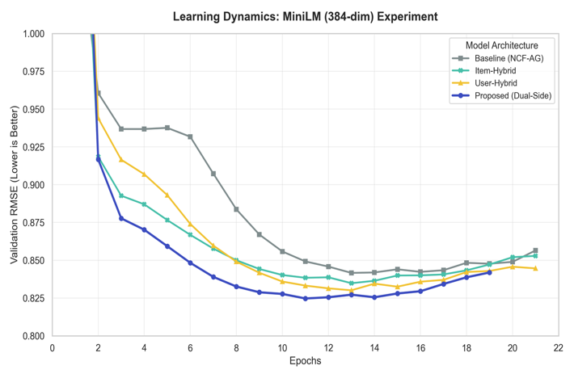
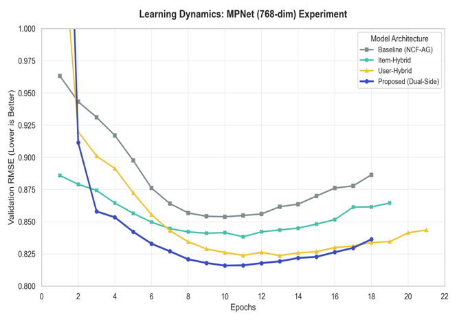
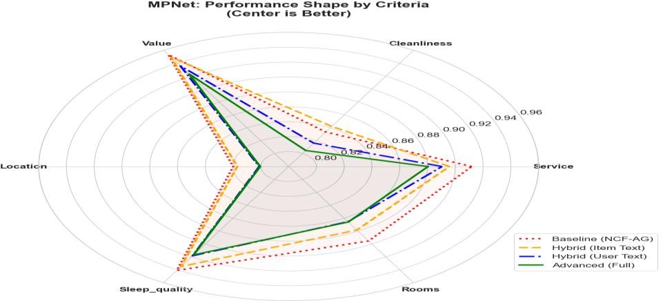
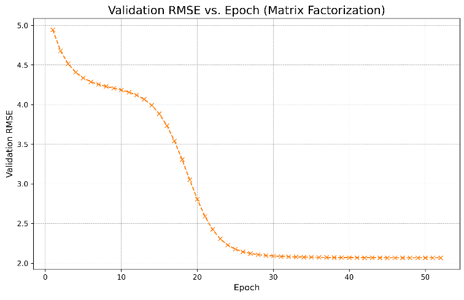

Graduation research thesis, National Institute of Technology, Tsuyama College
Enhancing Neural Collaborative Filtering by Aggregation with Dual-Side Semantic Review Embeddings
Each part is 64 numbers, so the model reads 256 in total. The two review parts are what this thesis adds to NCF-AG.
0.8163 RMSEBest test error, from the proposed Dual-Side model with MPNet embeddings: 4.47% lower than the NCF-AG baseline.
User text > hotel textWith MPNet, a user's own reviews improve accuracy about twice as much as the hotel's reviews do.
3,029,888 ratingsFrom 366,058 users on 122,376 hotels (TripAdvisor HotelRec), each with six criteria ratings and review text.
Introduction
Recommendation systems help people choose from millions of products, videos and hotels. Most learn only from star ratings, and ignore the reviews people take the time to write.
A rating says how much someone liked a hotel. The review says why: the quiet room, the rude front desk, the station five minutes away. It also shows who the reviewer is: what they care about, and how strictly they rate.
This thesis brings that text into a strong deep-learning recommender, NCF-AG (Neural Collaborative Filtering by Aggregation), which already predicts six detailed criteria ratings before the overall score. The work has three parts:
- Re-implement NCF-AG as a high-performance baseline.
- Build hybrid models that add hotel review text, user review text, and both together (the proposed Dual-Side model).
- Measure how much each kind of text improves rating prediction on a large real-world dataset.
Background
Collaborative filtering assumes that people who agreed in the past will agree again. Each step below keeps that idea but models it with more power. The last one is the baseline this thesis builds on.
-
Matrix Factorization
Koren et al., 2009 [6]
Users and items become vectors in a shared space; a rating is predicted by their dot product. Simple and fast, but only linear.
-
Neural Collaborative Filtering
He et al., 2017 [1]
Replaces the dot product with a neural network. The MLP variant concatenates the user and item embeddings and learns non-linear interactions through stacked ReLU layers.
-
NCF by Aggregation (NCF-AG)
Morise et al., 2022 [2]
Uses multi-criteria ratings. Stage 1 predicts each criterion (service, location, …); stage 2 aggregates them into the overall rating, much like a person forming an overall opinion.
All three use only IDs and numbers. None of them reads the review text.
Method
3.1 Data: from 50 million reviews to a dense core
The raw HotelRec dataset [3] is a single 40 GB JSON file of about 50 million TripAdvisor hotel reviews. Each review has user and hotel IDs, an overall rating (1–5), six criteria ratings, and the review text.
- Service
- Cleanliness
- Value
- Sleep quality
- Rooms
- Location
- Stream the fileRead one review at a time so the 40 GB file never has to fit in memory; drop reviews with invalid user IDs (null, undefined).
- Remove rare users and hotelsKeep only users and hotels with at least 5 interactions in the whole dataset.
- Keep complete reviewsKeep only reviews that have review text and all six criteria ratings.
- 5-core decompositionRepeatedly remove any user or hotel with fewer than 5 remaining interactions, until every user has rated at least 5 hotels and every hotel has at least 5 reviews.
- Map IDs to integersTurn string IDs into continuous indices for the embedding layers.
- Build semantic profilesFor every hotel, join all its reviews into one document; for every user, join all reviews they wrote. Encode each with a Sentence Transformer [4]: all-MiniLM-L6-v2 (384 dimensions, fast) or all-mpnet-base-v2 [5] (768 dimensions, more accurate).
- Users
- 366,058
- Hotels
- 122,376
- Ratings
- 3,029,888
- Criteria
- 6
- Sparsity
- 99.99%
Table 1. Final filtered dataset. About 25 ratings per hotel; extremely sparse, as real recommendation data usually is. The 5-core filter and NCF-AG's multi-task learning (7 ratings per review) help with that.
3.2 Four architectures, one backbone
All four models share the same NCF-AG backbone: an MLP tower, six criteria heads and an aggregation layer. They differ only in what goes into the first layer. Text embeddings (384 or 768 numbers) would drown out the 64-number ID embeddings, so each one is first compressed to 64 by a learned projection.
Experiment
Every deep model used the same settings and the same saved data split, so any difference in results comes from the input, not the training.
- Data split
- 70% train, 10% validation, 20% test, with a fixed random seed
- Embeddings
- 64 dimensions for user and hotel IDs and for projected text
- MLP tower
- 256 → 128 → 64, ReLU, dropout 0.5
- Optimizer
- AdamW, learning rate 0.0005, weight decay 0.0001
- Batch size
- 1,024
- Stopping
- Early stopping at the lowest validation RMSE
- Framework
- PyTorch
- Baselines
- Matrix Factorization (64-dim, dot product) and NCF-AG (same MLP, IDs only)
Training objective and metric
The models learn the overall rating and the six criteria at the same time. Results are reported as RMSE on the test set, in stars; lower is better.
Results
Every kind of review text helps, and the order is the same for both embedding models: hotel text a little, user text more, both together the most.
Test RMSE by architecture (lower is better)
The axis starts at 0.80 to make the differences visible. Matrix Factorization (2.0657) is far off this scale and is shown in the table.
| Model | MiniLM | MPNet |
|---|---|---|
| Matrix Factorization | 2.0657 (no text) | |
| Baseline NCF-AG | 0.8441 | 0.8545 |
| Item-Text hybrid | 0.8362 | 0.8402 |
| User-Text hybrid | 0.8303 | 0.8245 |
| Dual-Side (proposed) | 0.8258 | 0.8163 |
Results from a single optimized training run with a fixed random seed.
Improvement over NCF-AG
Relative RMSE reduction, (baseline − model) ÷ baseline, computed from Table 2 for each embedding model.
- Who the user is matters more than what the hotel is
With MPNet, user review text alone cut RMSE by 3.51%, about twice the 1.67% from hotel review text. A user's past writing carries a "rating persona": what they care about (a station nearby, good food, a quiet view) and how strictly they rate.
- Fusing both sides works best
The Dual-Side model was the most accurate with both embedding models: 0.8163 with MPNet (−4.47%) and 0.8258 with MiniLM (−2.17%).
- A size and accuracy trade-off
MPNet (768 dimensions) gives the best accuracy. MiniLM (384) is close behind with half-size vectors, less memory and faster training. MPNet suits large booking platforms, and MiniLM suits real-time or mobile systems.
How the models trained
Validation RMSE fell fastest and lowest for the Dual-Side model. After about 12 epochs the error started to rise again (overfitting), so early stopping kept the best checkpoint.


Improvement across all six criteria

The Dual-Side model has the lowest error on every criterion, not only on the overall rating.
The biggest gains are on the most subjective criteria, Value and Service. IDs alone can't say why someone felt a stay was poor value; the text of their complaints and praise can.
Why deep models: the Matrix Factorization baseline

The linear MF baseline converged slowly, needing more than 30 epochs, and settled above 2.0 RMSE (2.0657 on the test set).
Every NCF-AG model stayed below 0.86. The non-linear, multi-criteria backbone is what makes the text features worth adding.
Conclusion
Adding semantic profiles of both users and hotels to NCF-AG lowered test RMSE on every model, reaching 0.8163 with the Dual-Side model and MPNet embeddings.
The main finding is the "user persona": a user's aggregated review history predicts their future ratings better than descriptions of the hotel do. Deep models can learn a user's own rating standards, critical or generous, directly from how they write. That points to a new direction for personalized recommendation.
Future work
- Attention over reviewsLearn which reviews or sentences matter most for each prediction, instead of aggregating all text equally.
- Profiles that change over timeUpdate user embeddings as new reviews arrive, to follow how a rating persona changes over months or years.
- Distillation for mobileTransfer MPNet's accuracy into the lighter MiniLM architecture for on-device recommendation.
References
- He, X., Liao, L., Zhang, H., et al.: Neural Collaborative Filtering. arXiv:1708.05031 (2017).
- Morise, H., Atarashi, K., Oyama, S., et al.: Neural collaborative filtering with multicriteria evaluation data. Applied Soft Computing, 119, 108548 (2022).
- Diego999: HotelRec, a large-scale (~50M) hotel reviews dataset. github.com/Diego999/HotelRec (accessed 2025-07-22).
- Reimers, N., Gurevych, I.: Sentence-BERT: Sentence Embeddings using Siamese BERT-Networks. Proc. EMNLP 2019.
- Song, K., Tan, X., Qin, T., Lu, J., Liu, T.-Y.: MPNet: Masked and Permuted Pre-training for Language Understanding. NeurIPS 33, 16857–16867 (2020).
- Koren, Y., Bell, R., Volinsky, C.: Matrix factorization techniques for recommender systems. Computer, 42(8), 30–37 (2009).